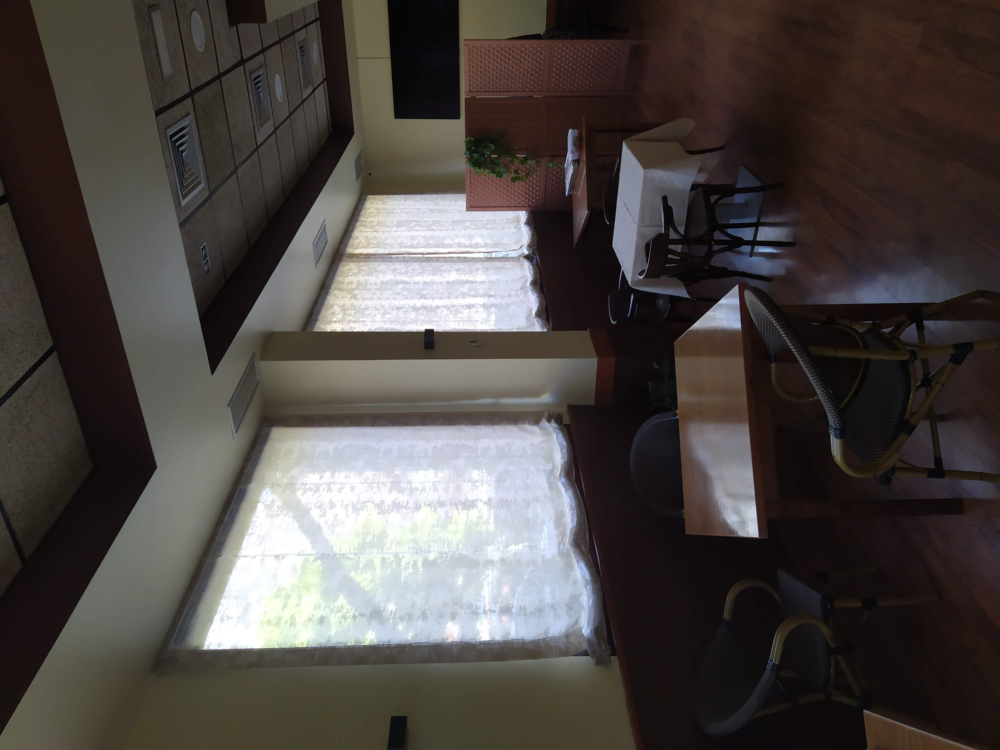
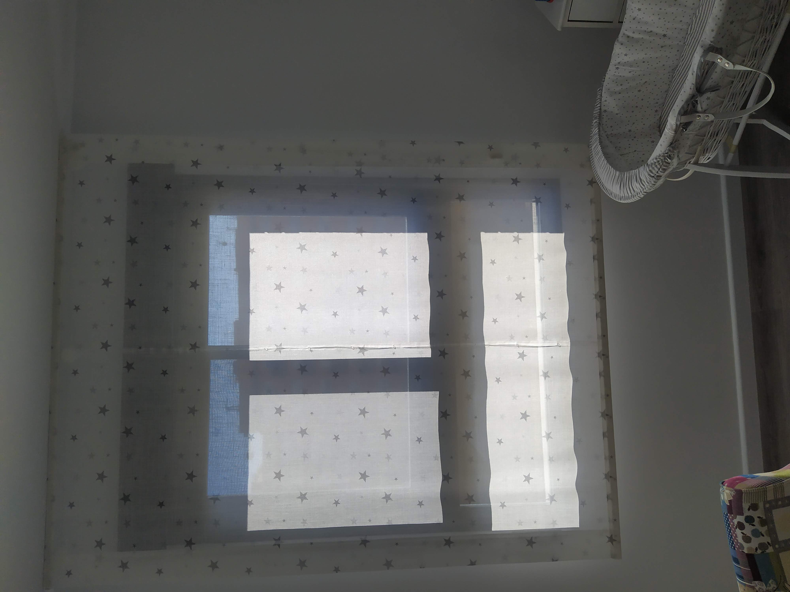
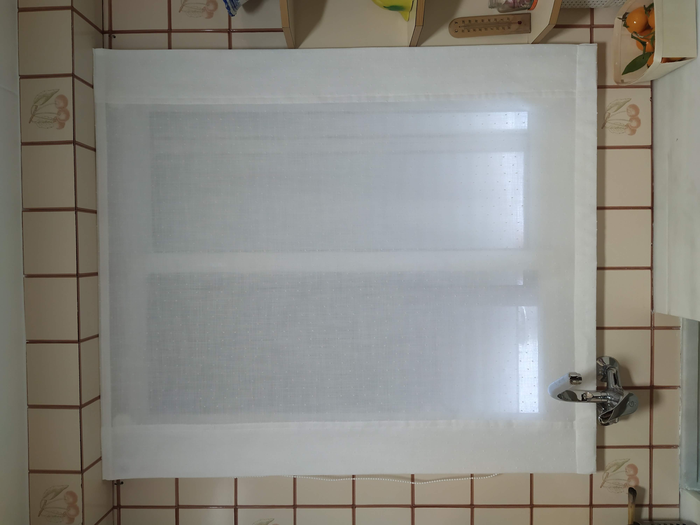
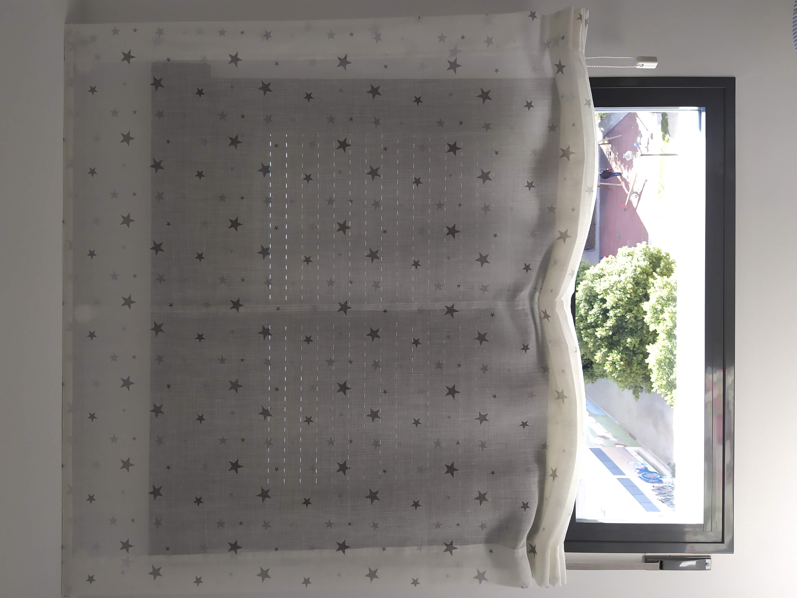

Estores paquete o plegables
Acabado textil elegante con pliegues suaves para ambientes calidos.
Que ofrecemos
Los estores paquete y plegables aportan una caida textil suave, perfecta para ambientes calidos y naturales. Permiten vestir la ventana con volumen sin perder luminosidad.
Seleccionamos tejidos con el gramaje adecuado para que el plegado sea regular y elegante en apertura y cierre.
Proceso de trabajo
Definimos altura de recogida, tipo de varilla y acabados para que el estor funcione de forma estable y tenga una lectura decorativa coherente con el resto del espacio.
Galeria de estores paquete y plegables



